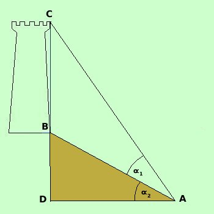

|
 Conosciamo La distanza AB L'angolo L'angolo possiamo misurare AB con un decametro a nastro e gli angoli mediante il teodolite Essendo il triangolo ACD rettangolo avremo che l'angolo ACD = 90°- ( Se ora considero il triangolo ABC conosco: la distanza AB l'angolo BAC = l'angolo ACB = 90°- ( Quindi conoscendo due angoli ed un lato posso risolvere il triangolo: applico il teorema dei seni per trovare la misura di BC
Esercizio: supponiamo di spostarci dal punto B di 30 metri AB = 40 m e che l'angolo di visuale e l'angolo di elevazione e quindi ho
|